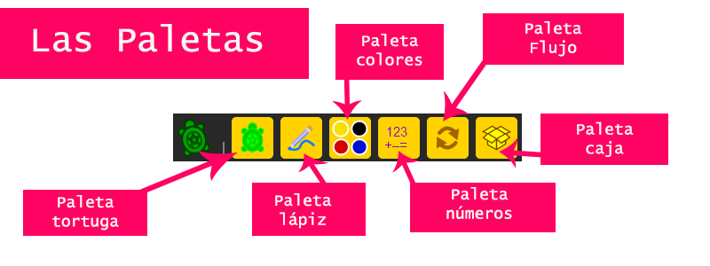
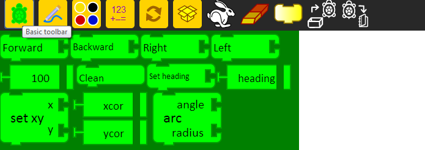
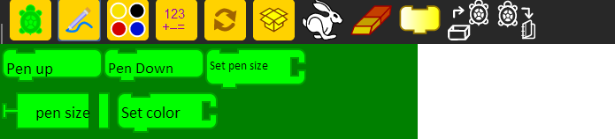
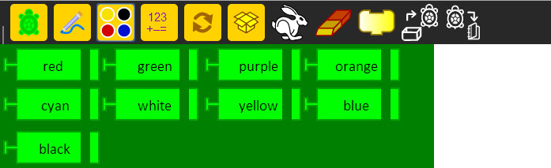
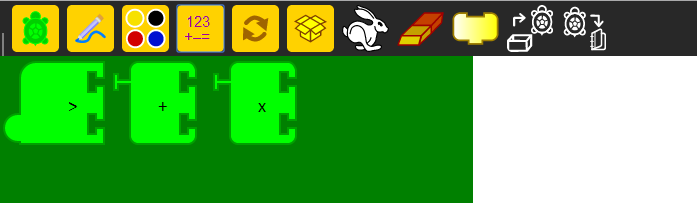
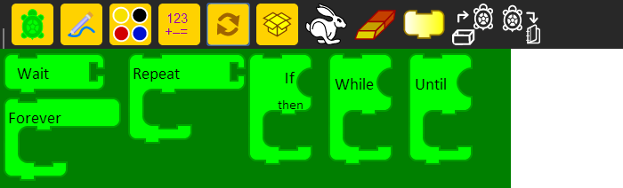
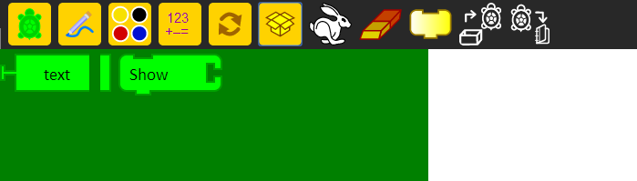

Tutorial 2: Palettes
En este tutorial se muestran las paletas, porque son tan importantes y como deberás usarlas.
Las paletas son la parte más importante en la barra de herramientas, debido que dentro de cada una de ellas se encuentran los bloques, la razón por la cual Turtle Art funciona, la principal razón por la que puedes dibujar sobre el lienzo.
Dentro del Menú de Paletas, se encuentran seis diferentes paletas, cada una con diferentes bloques para diferentes funciones. Estas seis paletas son: La paleta tortuga o paleta básica, la paleta lápiz, paleta colores, paleta números, paleta flujo y paleta de bloques. Cada una para diferentes usos.

Paleta Tortuga o paleta Básica: Es la paleta que contiene todas las funciones básicas de la tortuga, como son el movimiento, los encabezados y asignación de valores.
Paleta Lápiz: Con estos bloques, puedes configurar de maneras distintas el trazo del lápiz.
Paleta Colores: Esta paleta permite con sus bloques, cambiar el color del trazo del lápiz como tú quieras..
Paleta Números: Esta paleta contiene operadores matemáticos.
Paleta de flujo: Dentro de esta paleta hay instrucciones de flujo, así como en los lenguajes de programación, estos bloques pueden crear ciclos o sentencias de flujo, así como sentencias if y ciclos de tipo while, until, y for.
Paleta Bloque: Los bloques dentro de esta paleta, permiten mostrar texto dentro del dibujo en el lienzo..
Usar bloques
Usar los bloques es bastante sencillo, Solo tienes que dar clic sobre el bloque que deseas y arrastrarlo hasta el lienzo.
Solo mueve los bloques como objetos del tipoarrastrar y soltar.
Borrar bloques
Para borrar bloques que hayas colocado en el lienzo, solo tienes que arrastralrlos a cualquier paleta y despues dar clic para soltarlo.
Unir bloques
Para unir bloques, solamente tienes que arrastrar el bloque que deseas al otro bloque, dependiendo de cual sea el bloque y que es lo que este hace.
Ejemplos:
Uniendo bloques de valores
Uniendo bloques de acción
Paleta Básica o paleta Tortuga... continua tutorial 3